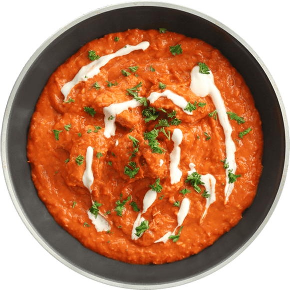
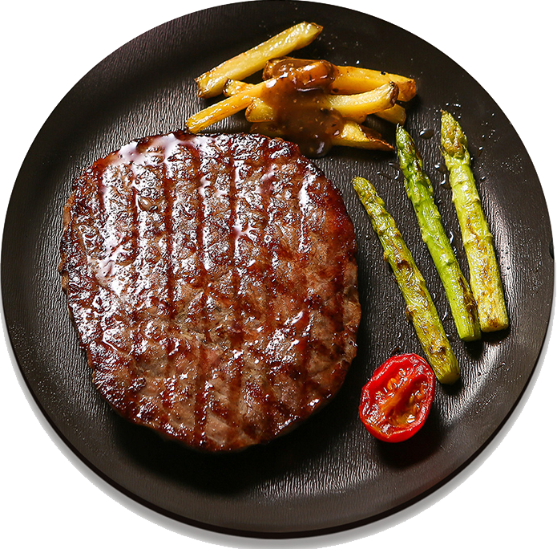

Soupe à l’oignon
A traditional French soup made of caramelized onions and beef stock, served with savory croutons and melted cheese on a toasted, crispy baguette slice.

Poulet Basquaise
A classic French Basque dish. Chicken is slowly pot roasted in a pepper sauce called piperade, made from melted red and green peppers, shallots, garlic and tomatoes. Served with either sauté potatoes or boiled rice.

Le Bifteck
A French beef cut. This steak is beautifully marbled and balanced between the fat and meat ratio. Sauces include pepper sauce, cheese sauce, borderlaise sauce or plain. Available in 300g, 500g, and 1kg.

Homard Thermidor
Tender lobster meat cooked the right way. The lobster is served with linguine, smothered in a rich buttery, white sauce. Available in 300g, 500g, and 1kg servings.